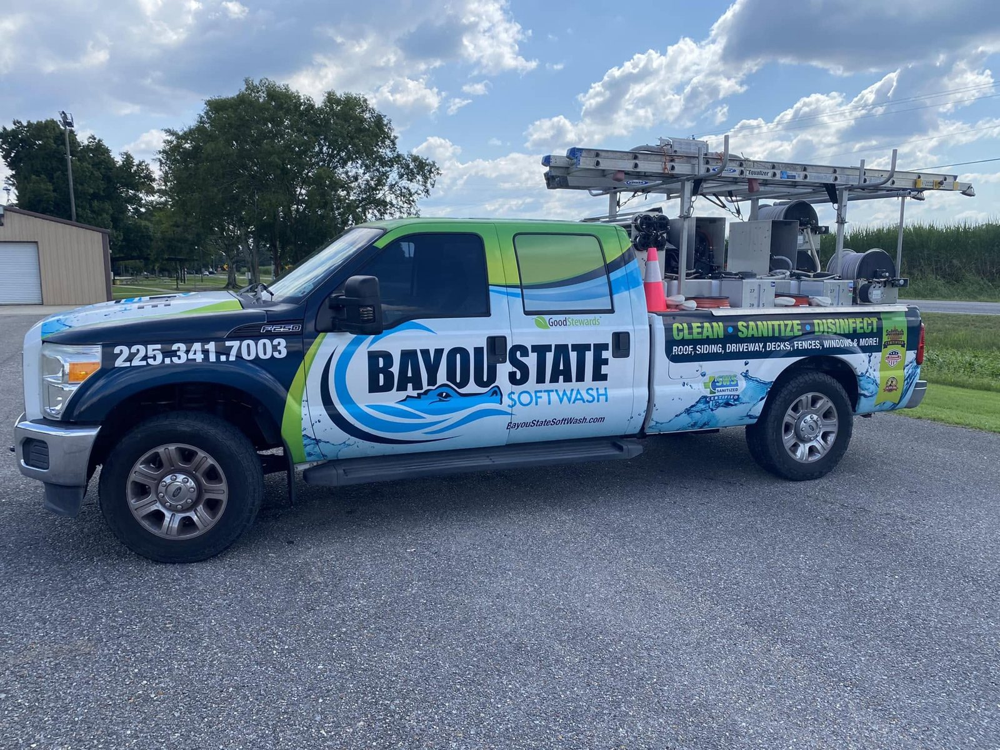
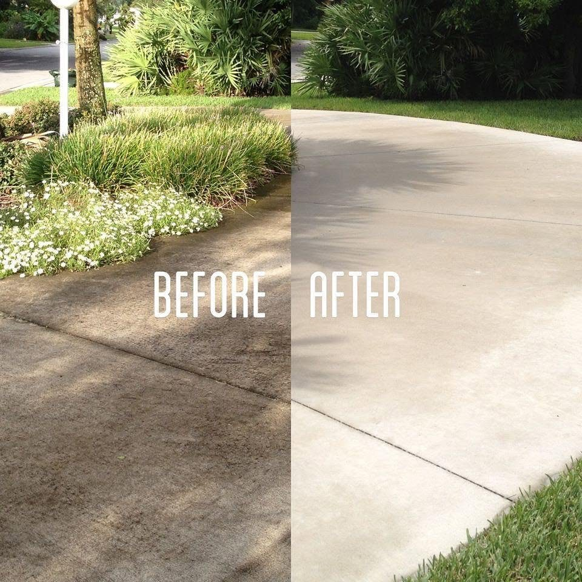
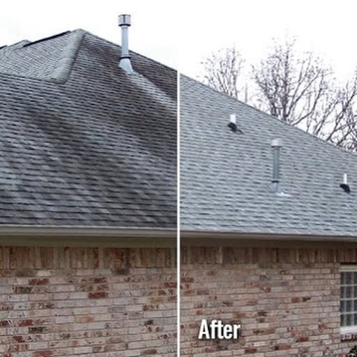
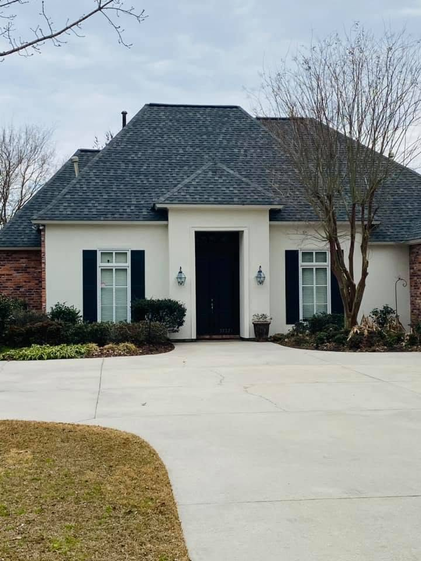
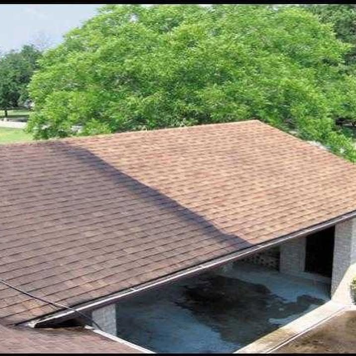
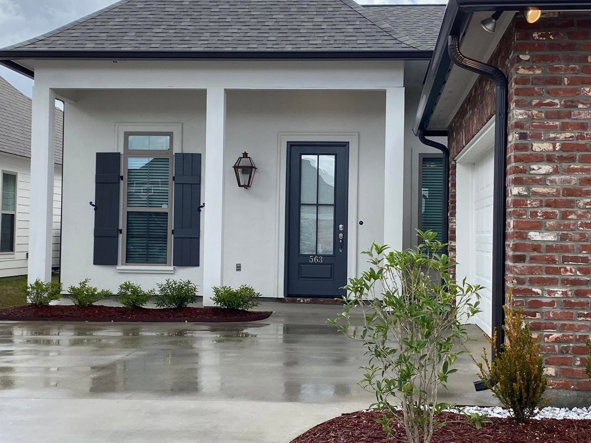

01 / EXTERIOR
Roof Cleaning
Present roof-cleaning options and help customers ask about the right approach for their property.
Ask for an estimate →A fresh look at Bayou State Softwash, featuring exterior cleaning, roof washing, and real project imagery from its public portfolio. Independent redesign preview.

THE DIFFERENCE IS IN THE DETAILS
Exterior cleaning should feel straightforward from the first question to the final result. Explore the services below, then tell us what your property needs.
OUR SERVICES
Services pictured or listed on the company vehicle; confirm current availability with the business before official launch.
Present roof-cleaning options and help customers ask about the right approach for their property.
Ask for an estimate →Make it easy to inquire about cleaning siding and other suitable exterior surfaces.
Ask for an estimate →Showcase driveway, walkway, and patio projects with clear before-and-after photography.
Ask for an estimate →THE WORK SPEAKS FOR ITSELF
A preview gallery using photos supplied for review. Permission is required before these images are published on a public website.





A BETTER EXPERIENCE
This redesigned concept emphasizes clear service information, easy mobile navigation, and a direct path to request an estimate.
Start Your Inquiry ↗Tell us what you'd like cleaned and where the property is located.
Your inquiry opens a prepared message you can send to the business.
Confirm availability, scope, and pricing directly with the team.
LET'S TALK ABOUT YOUR PROPERTY
Tell us a little about your project. This demonstration does not collect or store personal information: submitting opens your email application with a prepared inquiry.
See what customers are saying about Bayou State Softwash.
"Fantastic service! Very professional, free estimate and timely response to service."
"Tommy and his team are fantastic. They are very professional in their whole approach to their service."
"Bayou was very professional and response time was awesome. Quality of the work is excellent as well."
Have you worked with Bayou State Softwash?
Contact Us